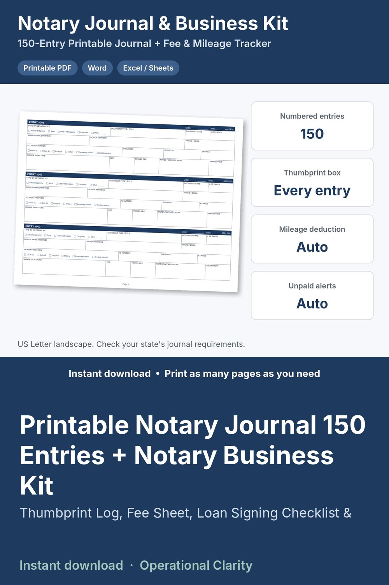

Printable Notary Journal 150 Entries + Notary Business Kit

NOTARY JOURNAL PRINTABLE + NOTARY BUSINESS KIT | 150 Numbered Entries with Thumbprint Box + Fee Sheet, Loan Signing Checklist & Fee / Mileage Tracker | PDF, Word, Excel / Google Sheets | Instant Download
A clean, professional notary journal you can print today, plus the business tools a mobile notary or loan signing agent actually uses.
PRINTABLE NOTARY JOURNAL (PDF, US Letter landscape)
• Cover / journal information page: notary name, commission number and expiration, county, volume, first and last entry, dates
• 150 numbered entries (001-150), 3 per page
• Every entry: date and time, type of act (acknowledgment, jurat, oath / affirmation, copy certification, other), document type, document date, number of pages, signer name, address, phone / email, ID type (driver license, state ID, passport, military, personally known, credible witness), ID number, issued by, expiration, fee, travel fee, signer signature, notes / witness name and a thumbprint box
• Plus a blank, un-numbered page to print as many times as you need
FEE SHEET & CHECKLISTS (Word + PDF)
• Client-facing fee sheet: notary fees, travel fees by distance, after-hours, waiting time, printing, trip fee, payment terms
• Appointment booking checklist with a "no legal advice" script for clients
• Loan signing checklist: before, at the table, after
FEE, MILEAGE & DIGITAL JOURNAL TRACKER (Excel / Google Sheets)
• Appointments log (1,000 rows): number of notarial acts x your fee, travel fee, signing agent fee, total income, paid / unpaid (unpaid turns red), round-trip miles and mileage deduction at the IRS rate you enter
• Digital journal backup tab with dropdowns for act type and ID type
• Dashboard: total income, still owed, notarial acts, miles, mileage deduction, average per appointment, loan signing income, and a month-by-month table and chart
WHAT YOU GET (one ZIP file)
• 1_Notary_Journal_150_Entries.pdf
• 1b_Notary_Journal_Blank_Page_print_as_needed.pdf
• 2_Fee_Sheet_and_Appointment_Checklists.docx + .pdf
• Notary_Fee_Mileage_and_Digital_Journal_Tracker.xlsx
• 0_START_HERE guide (Word + PDF)
IMPORTANT: Journal requirements differ by state. Some states require a permanently bound journal, specific entries or a thumbprint. Check your state's notary handbook before use. Not legal or tax advice.
INSTANT DIGITAL DOWNLOAD. No physical item will be shipped.